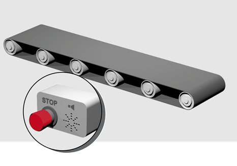
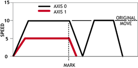

Axis Command
RAPIDSTOP[(mode)]
RS
The RAPIDSTOP command operates like the CANCEL command but does so for all axes using a subset of cancel modes.
All axes will decelerate at FASTDEC if specified, otherwise at DECEL .
|
mode: |
0 |
Cancels axis commands from the MTYPE buffers (default) |
|
1 |
Cancels all buffered moves on all axis (excluding the PMOVE ) |
|
|
2 |
Cancels all active and buffered moves including the PMOVE |
RAPIDSTOP(0) will only cancel the presently executing moves. If further moves are buffered, then they will be loaded, and so motion will not stop.
RAPIDSTOP(2) cancels all motion on all axes, including all MOVEADD additional movements.
Implementing a stop override button that cuts out all motion.

CONNECT(1, 0) AXIS(1) 'Axis 1 follows axis 0
BASE(0)
REPAEAT
MOVE(1000) AXIS (0)
MOVE(-100000) AXIS (0)
MOVE(100000) AXIS (0)
UNTIL IN(2) = OFF 'Stop button pressed?
RAPIDSTOP(2)
Using RAPIDSTOP to cancel a MOVE on the main axis and a FORWARD on the second axis. After the axes have stopped, a MOVEABS is applied to re-position the main axis.

BASE(0)
REGIST(3)
FORWARD AXIS(1)
MOVE(100000) 'Apply a long move
WAIT UNTIL MARK
RAPIDSTOP
WAIT IDLE 'For MOVEABS to be accurate, the axis must stop
MOVEABS(3000)
Using RAPIDSTOP to break a connect, and stop motion. The connected axis stops immediately on the RAPIDSTOP command, the forward axis decelerates at the FASTDEC value.
BASE(0)
CONNECT(1, 1)
FORWARD AXIS(1)
WAIT UNTIL VPSPEED = SPEED 'Let the axis get to full speed
WA(1000)
RAPIDSTOP
WAIT IDLE AXIS(1) 'Wait for axis 1 to stop
CONNECT(1, 1) 'Re-connect axis 0
REVERSE AXIS(1)
WAIT UNTIL VP_SPEED = SPEED
WA(1000)
RAPIDSTOP
WAIT IDLE AXIS(1)